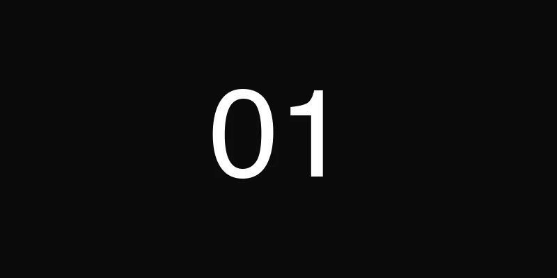
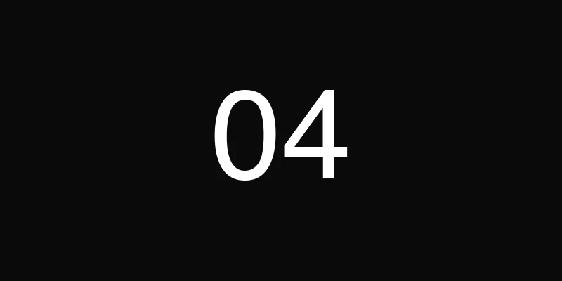

1. L'IA comme co-pilote de production
On ne va pas tourner autour du pot : l'intelligence artificielle a changé notre façon de produire des événements. Pas dans un futur hypothétique — maintenant, dans nos briefs de mars 2026. Et non, il ne s'agit pas de remplacer les chefs de projet par des robots. Il s'agit d'aller plus vite là où la machine excelle pour se concentrer sur ce que l'humain fait de mieux : créer de l'émotion.
Concrètement, on utilise l'IA pour automatiser les rétro-plannings. Un brief entre le lundi, un premier planning sort le mardi matin — avec les dépendances, les deadlines fournisseurs, les buffers intégrés. Ce qui prenait une demi-journée prend désormais vingt minutes de validation. Le gain n'est pas anecdotique : c'est du temps redistribué à la direction artistique, aux repérages, à la relation client.
Ensuite, il y a la prédiction de flux. Sur un événement de 500 personnes, l'IA analyse les données d'inscription, les horaires de transport, la météo, pour modéliser les pics d'affluence. Résultat : on ajuste la scénographie, le catering et le staffing en amont, pas en catastrophe le jour J. Moins de stress, plus de fluidité.
Enfin, la personnalisation du parcours invité atteint un niveau inédit. Badges dynamiques, recommandations de sessions en temps réel, matchmaking entre participants selon leurs centres d'intérêt — chaque invité vit un événement taillé sur mesure. L'IA ne remplace pas la créativité : elle la démultiplie. Et chez nous, c'est exactement comme ça qu'on l'utilise — comme un accélérateur, jamais comme un substitut.
2. Le micro-événement à fort impact
Pendant des années, le succès d'un événement se mesurait au nombre de participants. 300 invités ? Bien. 500 ? Mieux. 1 000 ? Jackpot. En 2026, cette logique s'est inversée. Les marques les plus exigeantes — luxe, tech, finance — ont compris que moins de volume signifie plus de valeur.
Le micro-événement, c'est 30 invités triés sur le volet plutôt que 300 anonymes derrière un badge. C'est un dîner dans un lieu confidentiel, une conversation avec un intervenant de calibre mondial, une expérience sensorielle impossible à reproduire en grand format. Chaque détail est calibré parce que l'échelle le permet : le menu est pensé invité par invité, le placement est stratégique, le timing est millimétré.
Les maisons de luxe l'ont compris les premières. Un lancement de collection pour 25 journalistes dans un atelier d'artisan crée plus d'impact médiatique qu'une soirée à 800 personnes dans un palace. Pourquoi ? Parce que l'exclusivité génère du désir, et le désir génère du contenu organique. Les invités ne partagent pas parce qu'on leur demande — ils partagent parce que l'expérience est réellement exceptionnelle.
Le ROI change de nature. On ne compte plus les têtes — on mesure la qualité des relations nouées, la durée des conversations, les suites business générées dans les semaines qui suivent. Un micro-événement bien produit devient un outil de conversion redoutable. Et pour nous, c'est un terrain de jeu passionnant : chaque détail compte, chaque moment est chorégraphié, chaque invité repart avec le sentiment d'avoir vécu quelque chose d'unique.
3. Le format hybride qui ne fait plus semblant
Soyons honnêtes : le format hybride de 2021-2023 était souvent une caméra posée au fond de la salle avec un lien Zoom envoyé la veille. L'audience en ligne subissait une version dégradée de l'événement physique. En 2026, cette époque est révolue — ou du moins, elle devrait l'être.
Le vrai hybride, celui qui fonctionne, conçoit deux événements distincts dès le brief. L'expérience en salle et l'expérience en ligne partagent un fil narratif commun, mais chacune a sa propre dramaturgie, son propre rythme, ses propres interactions. Le stream n'est pas un add-on : c'est un second événement à part entière, avec sa réalisation, son community management en direct, ses contenus exclusifs.
On voit émerger des formats où l'audience distante accède à des coulisses que la salle ne voit pas — interviews backstage, angles de caméra alternatifs, Q&A réservés. Le digital n'est plus le parent pauvre : il devient une expérience parallèle, parfois même plus riche en contenu. Les marques qui investissent dans cette approche constatent des taux d'engagement en ligne supérieurs de 40 % à l'ancien modèle "captation simple".
Pour les agences, cela signifie doubler les compétences : il faut un directeur artistique pour la salle et un réalisateur pour le flux digital. C'est plus exigeant en production, mais le reach est incomparable. Un événement physique de 200 personnes peut toucher 5 000 participants en ligne — à condition que l'expérience digitale mérite le déplacement, même virtuel.

4. L'écoresponsabilité comme standard, pas comme argument
Il y a trois ans, mentionner l'écoresponsabilité dans un brief événementiel, c'était un "plus" apprécié. En 2026, c'est un prérequis non négociable. Les clients ne demandent plus "est-ce que vous faites du green ?" — ils demandent "montrez-moi votre rapport d'impact".
Le zéro déchet n'est plus un objectif aspirationnel : c'est une méthodologie. Vaisselle réutilisable, signalétique réemployable, traiteur en circuit court, gestion des invendus alimentaires via des partenariats associatifs. Chaque prestataire est évalué sur son bilan carbone avant d'être sélectionné. Le sourcing local n'est plus une option esthétique — c'est un impératif logistique et éthique.
La compensation carbone, autrefois perçue comme une solution miracle, est désormais vue pour ce qu'elle est : un complément, pas un alibi. Les marques sérieuses exigent d'abord la réduction à la source — moins de transport, moins de matériaux neufs, moins de gaspillage énergétique — avant de parler d'offset. Et elles veulent des chiffres, pas des promesses.
Chez Dare-Dare, on intègre cette dimension dès la phase de conception. Choix du lieu en fonction de l'accessibilité transport, scénographie modulaire et réutilisable, partenaires locaux dans un rayon de 50 km quand c'est possible. L'écoresponsabilité n'est pas une contrainte créative — c'est un cadre qui pousse à l'ingéniosité. Et honnêtement, certains de nos événements les plus mémorables sont nés de ces contraintes-là.
5. Le retour du lieu brut
Pendant longtemps, événementiel premium rimait avec palace, lustre en cristal et moquette épaisse. En 2026, le luxe a changé de décor. Les lieux les plus demandés sont des espaces industriels, des rooftops bruts, des cours de ferme, des ateliers d'artistes — des endroits avec une âme, une texture, une imperfection assumée.
Ce virage n'est pas une mode passagère. Il répond à un besoin profond d'authenticité. Les invités, saturés de salles de réception identiques, cherchent la surprise, le dépaysement, l'inattendu. Un dîner sous une verrière industrielle, avec les poutres métalliques apparentes et la lumière naturelle qui filtre — c'est viscéralement plus marquant qu'un salon doré de plus.
L'avantage du lieu brut, c'est que le lieu devient le décor. Moins besoin de structures, de revêtements, de camouflage. On travaille avec l'existant, on le sublime avec un éclairage chirurgical, une scénographie minimale mais ultra-précise. Un arrangement floral monumental dans un entrepôt vide crée plus d'effet qu'une décoration complète dans un espace conventionnel.
C'est exactement la philosophie qu'on défend chez Dare-Dare. On repère des lieux que personne n'a encore utilisés, on les révèle par la lumière et la mise en scène, et on laisse leur caractère faire le reste. Le résultat : des événements photographiables sous tous les angles, des invités qui découvrent un lieu autant qu'une marque, et une empreinte mémorielle incomparablement plus forte.
6. Le contenu natif intégré
En 2026, chaque événement est un studio de contenu. Ce n'est plus une réflexion en aval ("on prendra quelques photos") — c'est une dimension intégrée dès la conception. Le parcours invité est pensé comme un parcours éditorial, avec des moments scénarisés pour la captation, des espaces conçus pour la photo et la vidéo, des angles optimisés pour les réseaux sociaux.
Les photocalls ont évolué. Exit le kakemono avec logos en fond : place aux installations immersives, aux murs végétaux interactifs, aux jeux de lumière et de miroirs qui génèrent du contenu organique. Les invités ne posent plus devant un backdrop — ils vivent une expérience visuelle qu'ils ont envie de partager spontanément.
Les créateurs de contenu sont intégrés à la scénographie elle-même. On ne les invite plus comme simples spectateurs avec un brief de posts : on co-crée avec eux des moments exclusifs, des accès backstage, des formats pensés pour leurs audiences respectives. Un créateur TikTok ne couvre pas un événement de la même façon qu'un journaliste lifestyle — et la scénographie doit offrir à chacun la matière première dont il a besoin.
Le résultat, c'est un événement qui produit du contenu pendant des semaines après sa clôture. Stories le soir même, reels le lendemain, articles la semaine suivante, podcasts le mois d'après. L'événement physique de trois heures se transforme en six semaines de visibilité organique. Et ça, pour un directeur marketing, c'est un ROI qu'aucun format publicitaire traditionnel ne peut égaler.

7. La DMC comme avantage stratégique
DMC : Destination Management Company. Derrière cet acronyme se cache l'une des évolutions les plus structurantes de l'événementiel haut de gamme. En 2026, les marques veulent des événements hors de leurs frontières habituelles — au Maroc, à Lisbonne, en Grèce, à Dubaï. Et pour réussir un événement à l'international, il faut un réseau local. Pas un contact trouvé sur Google — un vrai réseau, tissé année après année.
C'est là qu'intervient la DMC. Une agence qui connaît le terrain, qui a les prestataires fiables, qui maîtrise les autorisations administratives, les codes culturels, les contraintes logistiques locales. Organiser un dîner pour 100 personnes dans un riad de Marrakech, ce n'est pas la même chose que dans un restaurant parisien. Les délais sont différents, les processus sont différents, les attentes sont différentes.
Dare-Dare opère comme DMC au Maroc, et c'est l'un de nos atouts les plus différenciants. On couvre Casablanca, Marrakech, Rabat, Tanger, Fès et Essaouira avec des équipes locales, des partenaires de confiance et une connaissance intime du terrain. Quand un client nous confie un séminaire à Marrakech ou un lancement produit à Tanger, il sait que la production sera au même niveau d'exigence qu'à Paris — parce qu'on ne sous-traite pas : on opère.
Cette capacité DMC transforme la proposition de valeur. Au lieu de coordonner trois agences (la vôtre, une locale, et une de production), le client a un seul interlocuteur qui maîtrise la vision créative et l'exécution terrain. Moins d'intermédiaires, moins de déperdition, plus de cohérence. En 2026, la DMC n'est plus un service annexe — c'est un avantage stratégique qui fait gagner des appels d'offres.
Le fil rouge de 2026
Si on prend du recul, un fil conducteur relie ces sept tendances : les événements de 2026 sont plus intelligents, plus intimes, plus responsables. Chaque tendance pousse dans la même direction — plus de sens, moins de superficiel. Plus de personnalisation, moins de volume. Plus de singularité, moins de copier-coller.
C'est exactement là que Dare-Dare se positionne. Notre métier n'est pas de remplir des salles — c'est de créer des moments qui comptent. De la production au service de l'émotion, pas du spectacle vide. Et si ces tendances vous inspirent autant qu'elles nous inspirent, on a probablement des choses à construire ensemble.